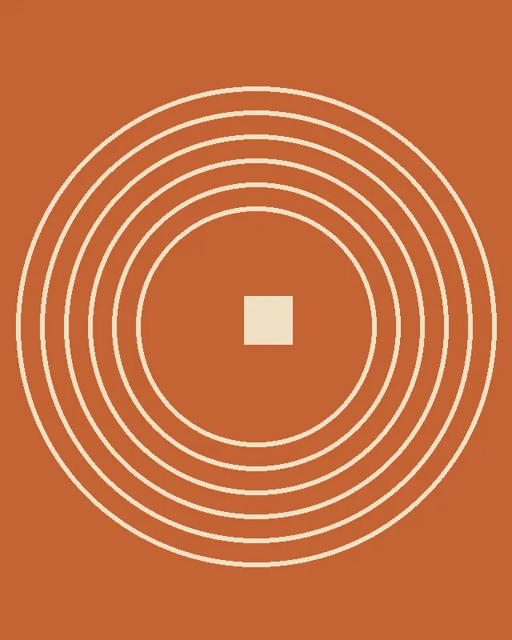
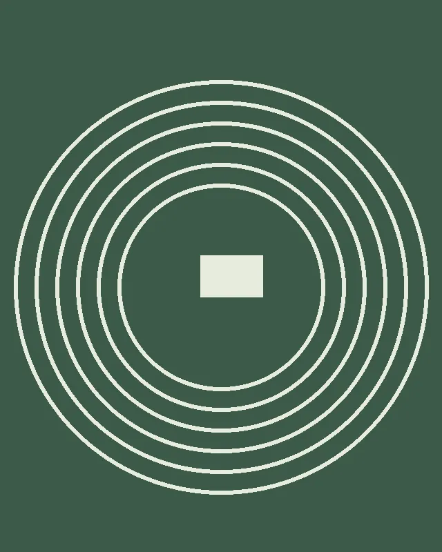
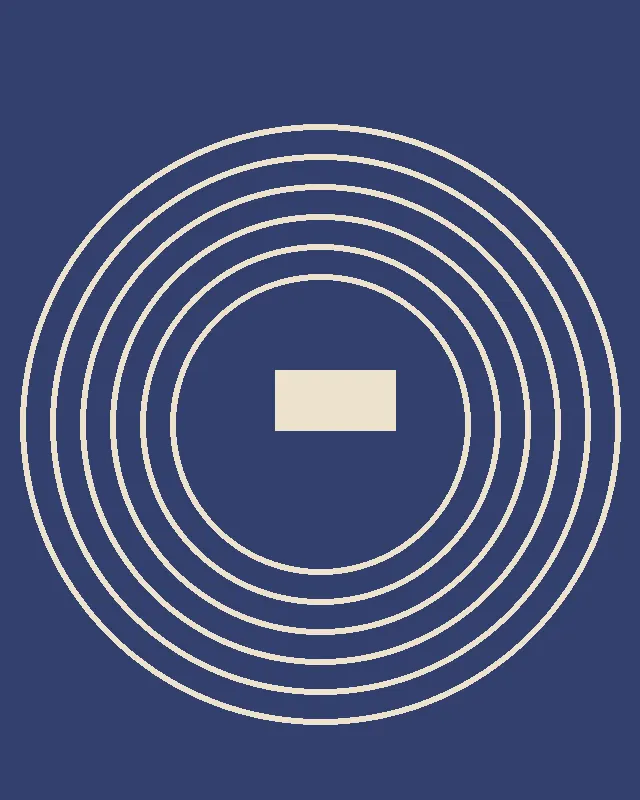
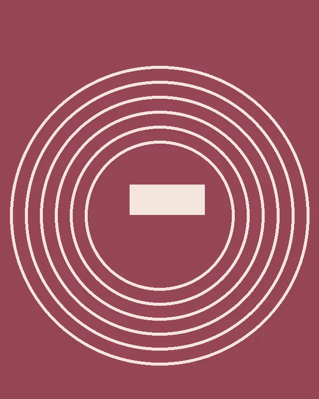
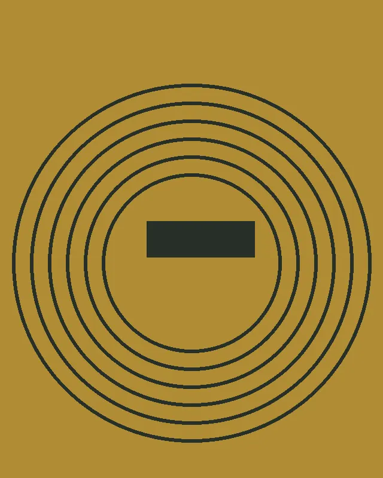
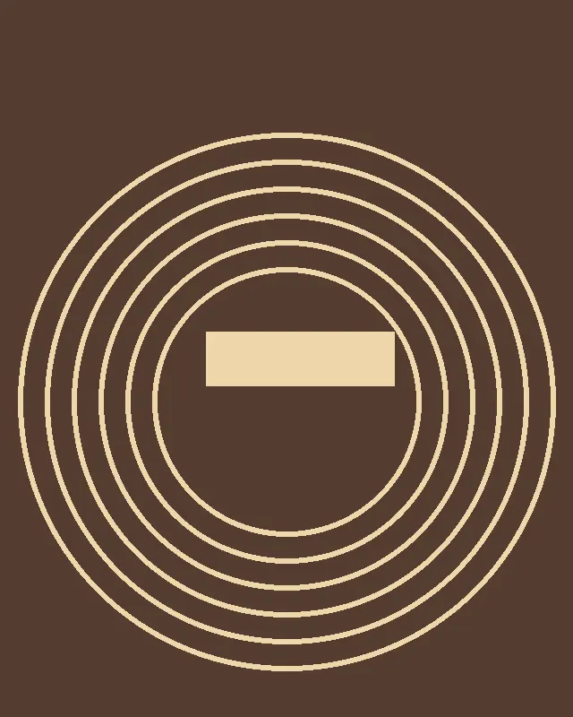

Role para andar de lado.
Seis peças em um trilho horizontal. No computador a página fica presa enquanto o trilho passa; no celular a faixa arrasta com o dedo.
Seis peças

Peça 01 
Peça 02 
Peça 03 
Peça 04 
Peça 05 
Peça 06
Fim da galeria.
A rolagem vertical volta a andar quando o trilho chega ao fim.